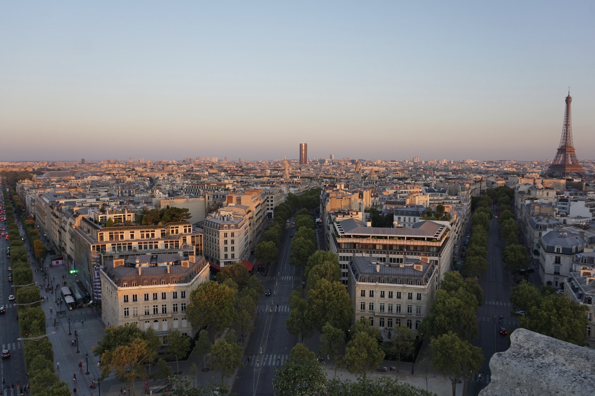
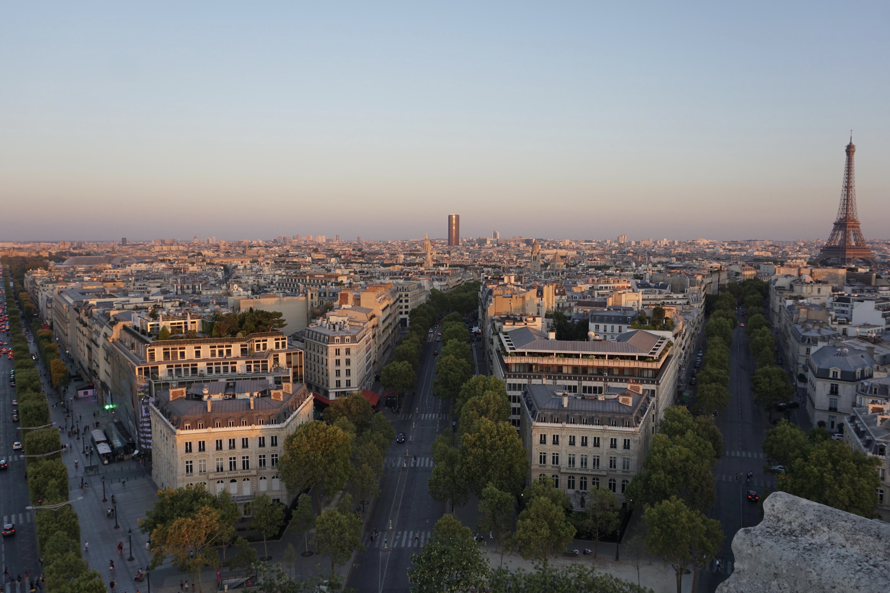

I wrote this spoken word during the Pandemic in 2020 when I feeling everything, but at the same time nothing at all.

I wrote this spoken word in 2021 about a friend I felt slipping away. I so badly wanted to hold onto them, but at the same time wanted to forget everything I ever knew about them.
I wrote this spoken word in 2022 when I started to reevaluate the company I was keeping in life.

I wrote this spoken word in 2019 when I was felt very alone in how I felt.
I wrote this spoken word within the last month as I sit and watch angrily at the truth of an on going genocide being ignored by the world, and the narrative put out by Western media about Palestinians.
I wrote this spoken word earlier this year when I was questioning and doubting the past.


 
